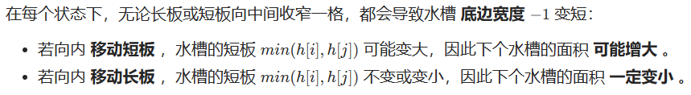

双指针
双指针¶
167 两数之和II-输入有序数组¶
方法一：排序数组，双指针遍历方向相反¶
因为数组已经排好序，我们可以采用方向相反的双指针来寻找这两个数字，一个初始指向最小的元素，即数组最左边，向右遍历；一个初始指向最大的元素，即数组最右边，向左遍历。
- 如果两个指针指向元素的和等于给定值，那么它们就是我们要的结果。
- 如果两个指针指向元素的和小于给定值，我们把左边的指针右移一位，使得当前的和增加一点。如果两个指针指向元素的和大于给定值，我们把右边的指针左移一位，使得当前的和减少一点。
可以证明，对于排好序且有解的数组，双指针一定能遍历到最优解。证明方法如下：假设最优解的两个数的位置分别是 l和 r。我们假设在左指针在 l左边的时候，右指针已经移动到了 r；此时两个指针指向值的和小于给定值，因此左指针会一直右移直到到达 l。同理，如果我们假设在右指针在 r右边的时候，左指针已经移动到了 l；此时两个指针指向值的和大于给定值，因此右指针会一直左移直到到达 r。所以双指针在任何时候都不可能处于 (l,r)之间，又因为不满足条件时指针必须移动一个，所以最终一定会收敛在 l和 r
#include <iostream>
using namespace std;
#include <vector>
#include <algorithm>
vector<int> createVector() {
vector<int> ivec;
int num;
do
{
cin >> num;
ivec.push_back(num);
} while (getchar() != '\n');
return ivec;
}
void printVector(vector<int>& v) {
for (vector<int>::iterator it = v.begin(); it != v.end(); it++) {
cout << *it << " ";
}
cout << endl;
}
class Solution {
public:
vector<int> twoSum(vector<int>& numbers, int target) {
//l一开始在最左边，r在最右边
int l = 0, r = numbers.size() - 1, sum;
while (l < r) {
sum = numbers[l] + numbers[r];
if (sum == target) { //两个指针指向元素的和等于给定值，结束
break;
}
if (sum < target) { //如果小了，左指针往右移
++l;
}
else { //如果大了，右指针往左移
--r;
}
}
return vector<int>{ l + 1,r + 1 }; //因为下标从1开始，多加1
}
};
int main()
{
vector<int> numbers;
numbers = createVector();
int target;
cin >> target;
Solution ss;
vector<int> result = ss.twoSum(numbers, target);
cout << result[0] <<" "<<result[1] << endl;;
system("pause");
return 0;
}
15 三数之和¶
方法1：双指针¶
class Solution {
public:
vector<vector<int>> threeSum(vector<int>& nums) {
vector<vector<int>> result;
sort(nums.begin(), nums.end());
for (int i = 0; i < nums.size(); i++) {
if (nums[i] > 0) {
return result;
}
if (i>0 && nums[i]==nums[i-1]) {
continue;
}
int left = i + 1;
int right = nums.size() - 1;
while (right > left) {
if (nums[i] + nums[left] + nums[right] > 0) right--;
else if (nums[i] + nums[left] + nums[right] < 0) left++;
else {
result.push_back(vector<int>{nums[i], nums[left], nums[right]});
while (right > left && nums[right] == nums[right - 1]) right--;
while (right > left && nums[left] == nums[left + 1])left++;
right--;
left++;
}
}
}
return result;
}
};
方法2：排序+双指针 k神¶
class Solution {
public:
vector<vector<int>> threeSum(vector<int>& nums) {
sort(nums.begin(), nums.end());
vector<vector<int>> res;
for(int k=0;k<nums.size()-2;k++){
if(nums[k]>0) break;
if(k>0 && nums[k]==nums[k-1]) continue;
int i=k+1, j=nums.size()-1;
while(i<j){
int sum=nums[k]+nums[i]+nums[j];
if(sum<0){
while(i<j && nums[i]==nums[++i]);
}
else if(sum>0){
while(i<j && nums[j]==nums[--j]);
}
else{
res.push_back({nums[k],nums[i],nums[j]});
while(i<j && nums[i]==nums[++i]);
while(i<j && nums[j]==nums[--j]);
}
}
}
return res;
}
};
18 四数之和¶
方法1：双指针¶
class Solution {
public:
vector<vector<int>> fourSum(vector<int>& nums, int target) {
vector<vector<int>> result;
sort(nums.begin(), nums.end());
for (int k = 0; k < nums.size(); k++) {
// 剪枝处理
if (nums[k] > target && nums[k] >= 0) {
break;
}
// 对nums[k]去重
if (k > 0 && nums[k] == nums[k - 1]) {
continue;
}
for (int i = k + 1; i < nums.size(); i++) {
// 2级剪枝处理
if (nums[k] + nums[i] > target && nums[k] + nums[i] >= 0) {
break;
}
// 对nums[i]去重
if (i > k + 1 && nums[i] == nums[i - 1]) {
continue;
}
int left = i + 1;
int right = nums.size() - 1;
while (right > left) {
if ((long)nums[k] + nums[i] + nums[left] + nums[right] > target) {
right--;
}
else if ((long)nums[k] + nums[i] + nums[left] + nums[right] < target) {
left++;
}
else {
result.push_back(vector<int>{nums[k], nums[i], nums[left], nums[right]});
// nums[left]和nums[right]去重
while (right > left && nums[right] == nums[right - 1]) right--;
while (right > left && nums[left] == nums[left + 1]) left++;
// 找到答案时，双指针同时收缩
right--;
left++;
}
}
}
}
return result;
}
};
88 合并两个有序数组¶
方法一：双指针¶
每次从两个数组的头部取出比较小的数字放到结果中
#include <iostream>
using namespace std;
#include <vector>
#include <algorithm>
vector<int> createVector() {
vector<int> ivec;
int num;
do
{
cin >> num;
ivec.push_back(num);
} while (getchar() != '\n');
return ivec;
}
class Solution {
public:
void merge(vector<int>& nums1, int m, vector<int>& nums2, int n) {
//双指针
int p1 = 0, p2 = 0;
//创建一个新的数组，暂存排好序的数
int *sorted=new int[m + n];
int cur;
while (p1 < m || p2 < n) {
if (p1 == m) {
cur = nums2[p2++];
}
else if (p2 == n) {
cur = nums1[p1++];
}
else if (nums1[p1] < nums2[p2]) {
cur = nums1[p1++];
}
else {
cur = nums2[p2++];
}
sorted[p1 + p2 - 1] = cur;
}
//降排好序的数组赋给nums1
for (int i = 0; i < m + n; ++i) {
nums1[i] = sorted[i];
}
delete[] sorted;
}
};
int main()
{
vector<int> nums1, nums2;
int m, n;
nums1 = createVector();
cin >> m;
nums2 = createVector();
cin >> n;
Solution ss;
ss.merge(nums1, m, nums2, n);
for (int i = 0; i < m + n; ++i) {
cout << nums1[i] << " ";
}
system("pause");
return 0;
}
第2次：双指针¶
写的更好看，仿照合并两个有序列表写的
class Solution {
public:
void merge(vector<int>& nums1, int m, vector<int>& nums2, int n) {
int i=0, j=0;
int k=0;
vector<int> nums(m+n);
while(i<m && j<n){
if(nums1[i]<=nums2[j]){
nums[k]=nums1[i];
k++;
i++;
}
else{
nums[k]=nums2[j];
k++;
j++;
}
}
if(i<m){
while(i<m){
nums[k]=nums1[i];
k++;
i++;
}
}
else{
while(j<n){
nums[k]=nums2[j];
k++;
j++;
}
}
nums1=nums;
}
};
142 环形链表II¶
方法一：快慢指针¶
对于链表找环路的问题，有一个通用的解法——快慢指针（Floyd判圈法）。
- 给定两个指针，分别命名为 slow和 fast，起始位置在链表的开头。
- 每次 fast前进两步，slow前进一步。如果 fast可以走到尽头，那么说明没有环路；
- 如果 fast可以无限走下去，那么说明一定有环路，且一定存在一个时刻 slow和 fast相遇。
- 当 slow和 fast第一次相遇时，我们将 fast重新移动到链表开头，并让 slow和 fast每次都前进一步。当 slow和 fast第二次相遇时，相遇的节点即为环路的开始点

class Solution {
public:
ListNode* detectCycle(ListNode* head) {
ListNode* slow = head, * fast = head;
//判断还是否存在环路
do {
//如果存在fast为空，或者fast->next为空的情况，
//说明fast可以走到尽头，就说明没有环路
if (!fast || !fast->next) {
return nullptr;
}
//每次fast前进两步，slow前进一步
fast = fast->next->next;
slow = slow->next;
} while (fast != slow); //如果存在环路，一定存在一个时刻slow和fast相遇
//当slow和first第一次相遇时，将fast重新移动到链表开头
fast = head;
while (fast != slow) { //当slow和fast第二次相遇时，相遇的节点即为环路的开始点
//让slow和fast每次都前进一步
slow = slow->next;
fast = fast->next;
}
return fast;
}
};
76 最小覆盖子串¶
方法一：滑动窗口¶
滑动窗口机制，一个用于【延伸】现有窗口的r指针，一个用于【收缩】窗口的l指针，在任意时刻，只有一个指针运动，而另一个保持静止。
我们在 s 上滑动窗口，通过移动 r 指针不断扩张窗口。当窗口包含 t 全部所需的字符后，如果能收缩，我们就收缩窗口直到得到最小窗口。
使用长度为128的数组来映射字符，其中chars表示目前每个字符缺少的数量，flag表示每个字符中是否在t中存在
class Solution {
public:
string minWindow(string S, string T) {
vector<int> chars(128, 0);
vector<bool> flag(128, false);
//先统计T中的字符情况
for (int i = 0; i < T.size(); ++i) {
flag[T[i]] = true; //在flag中，将t字符串中字母对应的ASCII码位置为true
++chars[T[i]]; //在chars中，将t字符串中字母对应的ASCII位上，统计相应字母的个数s
}
//移动滑动窗口，不断更改统计数据
int cnt = 0, l = 0, min_l = 0, min_size = S.size() + 1;
for (int r = 0; r < S.size(); ++r) {
if (flag[S[r]]) {
//对应的字母个数减1s
if (--chars[S[r]] >= 0) {
//cnt++，表示有一个相符
++cnt;
}
//若目前滑动窗口已包含T中全部字符，
//则尝试将l右移，在不影响结果的情况下获得最短子字符串
while (cnt == T.size()) {
if (r - l + 1 < min_size) {
min_l = l;
min_size = r - l + 1;
}
if (flag[S[l]] && ++chars[S[l]] > 0) {
--cnt;
}
++l;
}
}
}
return min_size > S.size() ? "" : S.substr(min_l, min_size);
}
};
438 找到字符串中所有字母异位词¶
方法1：滑动窗口¶
滑动窗口很好的题解：我写了一首诗，把滑动窗口算法变成了默写题 - 找到字符串中所有字母异位词 - 力扣（LeetCode）
class Solution {
public:
vector<int> findAnagrams(string s, string p) {
unordered_map<char, int> need, window;
for (char c : p) need[c]++;
int left = 0, right = 0;
int valid = 0;
vector<int> res; // 记录结果
while (right < s.size()) {
char c = s[right];
right++;
// 进行窗口内数据的一系列更新
if (need.count(c)) {
window[c]++;
if (window[c] == need[c])
valid++;
}
// 判断左侧窗口是否要收缩
while (right - left >= p.size()) {
// 当窗口符合条件时，把起始索引加入 res
if (valid == need.size())
res.push_back(left);
char d = s[left];
left++;
// 进行窗口内数据的一系列更新
if (need.count(d)) {
if (window[d] == need[d])
valid--;
window[d]--;
}
}
}
return res;
}
};
第2种 双指针实现滑动窗口¶
438. 找到字符串中所有字母异位词 - 力扣（LeetCode）
class Solution {
public:
vector<int> findAnagrams(string s, string p) {
vector<int> ans;
int n = s.length(), m = p.length();
vector<int> c1(26, 0), c2(26, 0);
// 统计词频
for (char ch : p) c2[ch - 'a']++;
// 统计滑动窗口内的s的子串词频
for (int l = 0, r = 0; r < n; r++) {
c1[s[r] - 'a']++;
if (r - l + 1 > m) c1[s[l++] - 'a']--;
if (check(c1, c2)) ans.push_back(l);
}
return ans;
}
bool check(vector<int>& c1, vector<int>& c2) {
for (int i = 0; i < 26; i++) {
if (c1[i] != c2[i]) return false;
}
return true;
}
};
202 快乐数¶
方法一：快慢指针¶
快指针每次走两步，慢指针每次走一步，当二者相等时，即为一个循环周期。循环结束后，判断是不是1，是的话就是快乐数，否则不是快乐数。
class Solution {
public:
int bitSquareSum(int n) {
int sum = 0;
while (n > 0) {
int bit = n % 10;
sum += bit * bit;
n = n / 10;
}
return sum;
}
bool isHappy(int n) {
int slow = n, fast = n;
do {
slow = bitSquareSum(slow);
fast = bitSquareSum(fast);
fast = bitSquareSum(fast);
} while (slow != fast);
return slow == 1;
}
};
27 移除元素¶
方法1：双指针法（快慢指针）¶

- 快指针：寻找新数组的元素，新数组就是不含有目标元素的数组
- 慢指针：指向更新 新数组下标的位置
class Solution {
public:
int removeElement(vector<int>& nums, int val) {
int slow = 0;
for (int fast = 0; fast < nums.size(); fast++) {
if (nums[fast] != val) {
nums[slow] = nums[fast];
++slow;
}
}
return slow;
}
};
977 有序数组的平方¶
方法1：双向指针¶

class Solution {
public:
vector<int> sortedSquares(vector<int>& nums) {
int m = nums.size() - 1;
vector<int> ans(nums.size(), 0);
int i = 0;
int j = nums.size() - 1;
while (i <= j) {
if (nums[i] * nums[i] < nums[j] * nums[j]) {
ans[m--] = nums[j] * nums[j];
--j;
}
else {
ans[m--] = nums[i] * nums[i];
++i;
}
}
return ans;
}
};
209 长度最小的子数组¶
方法1：滑动窗口¶
在本题中实现滑动窗口，主要确定如下三点：
- 窗口内是什么？
- 如何移动窗口的起始位置？
- 如何移动窗口的结束位置？
窗口就是 满足其和 ≥ s 的长度最小的 连续 子数组。
窗口的起始位置如何移动：如果当前窗口的值大于s了，窗口就要向前移动了（也就是该缩小了）。
窗口的结束位置如何移动：窗口的结束位置就是遍历数组的指针，也就是for循环里的索引。
解题的关键在于 窗口的起始位置如何移动，如图所示：

class Solution {
public:
int minSubArrayLen(int target, vector<int>& nums) {
int len = nums.size();
int ans =INT_MAX;
int sum = 0; // 滑动窗口数值之和
int l = 0; // 滑动窗口起始位置
for (int r = 0; r < len; ++r) {
sum += nums[r];
// 注意这里使用while，每次更新 l（起始位置），并不断比较子序列是否符合条件
while (sum >= target) {
int sublength = (r - l + 1); // 取子序列的长度
ans = ans < sublength ? ans : sublength;
sum -= nums[l++]; // 这里体现出滑动窗口的精髓之处，不断变更l（子序列的起始位置）
}
}
// ans没有被赋值的话，就返回0，说明没有符合条件的子序列
return ans == INT_MAX ? 0 : ans;
}
};
3 无重复字符的最长子串¶
方法1：滑动窗口¶
class Solution {
public:
int lengthOfLongestSubstring(string s) {
if (s.size() == 0) return 0;
unordered_set<char> lookup;
int maxStr = 0;
int left = 0;
for (int i = 0; i < s.size(); i++) {
while (lookup.find(s[i]) != lookup.end()) {
// 找到了，移动队列并把队列左边的元素移出
lookup.erase(s[left]);
left++;
}
// 一直找出队列最长的长度
maxStr = max(maxStr, i - left + 1);
lookup.insert(s[i]);
}
return maxStr;
}
};
11 盛最多水的容器¶
方法1：双指针¶
此题的面积公式： $ s(i,j)=min(h[i],h[j])*(j-1) $

因此，初始化双指针分列水槽左右两端，循环每轮将短板向内移动一格，并更新面积最大值，直到两指针相遇时跳出；即可获得最大面积。
class Solution {
public:
int maxArea(vector<int>& height) {
int i = 0, j = height.size() - 1, res = 0;
while (i < j) {
if (height[i] < height[j]) {
res = max(res, (j - i) * height[i++]);
}
else {
res = max(res, (j - i) * height[j--]);
}
}
return res;
}
};
287 寻找重复数¶
方法1：快慢指针¶
1.数组中有一个重复的整数 <=> 链表中存在环 2.找到数组中的重复整数 <=> 找到链表的环入口
class Solution {
public:
int findDuplicate(vector<int>& nums) {
int slow = 0;
int fast = 0;
slow = nums[slow];
fast = nums[nums[fast]];
while (slow != fast) {
slow = nums[slow];
fast = nums[nums[fast]];
}
int pre1 = 0;
int pre2 = slow;
while (pre1 != pre2) {
pre1 = nums[pre1];
pre2 = nums[pre2];
}
return pre1;
}
};
925 长按键入¶
方法1：双指针¶
class Solution {
public:
bool isLongPressedName(string name, string typed) {
if(typed.size()<name.size()) return false;
int i=0,j=0;
int lenName=name.size(),lenTyped=typed.size();
while(i<lenName && j< lenTyped){
// 如果相同就都移动，如果不同就只移动typed
if(name[i]==typed[j]){
++i;
++j;
}
else{
++j;
}
}
if(i==lenName && j<=lenTyped){
return true;
}
else{
return false;
}
}
};
1498. 满足条件的子序列数目¶
class Solution {
public:
int numSubseq(vector<int>& nums, int target) {
int mod=1e9+7;
// 求子序列不必保持数组顺序，先把数据排序
sort(nums.begin(), nums.end());
int n=nums.size();
int res=0;
vector<int> pw(n, 0);
pw[0]=1;
// 算组合数需要多次算 2 的幂，所以直接把幂运算的结果存在数组
for(int i=1;i<n;i++){
pw[i]=(pw[i-1]*2)%mod;
}
// 滑动窗口，先固定左边界，然后找右边界，右边界值尽量大且满足左边界值 + 右边界值 < target，该区间的组合数为 2 的 n-1 次幂，n 为区间元素个数
for(int i=0, j=n-1;i<n;i++){
while(i<=j && nums[i]+nums[j]>target) j--;
if(i>j) break;
res=(res+pw[j-i])%mod; //固定住底下一位，最多就p[j-i]种，
//比如 i=1 j =2，就两种情况 一是nums[i]，二是nums[i]和nums[j] ，所以是pw[j-i]
}
return res;
}
};
1004. 最大连续1的个数 III¶
方法1：双指针¶
class Solution {
public:
int longestOnes(vector<int>& nums, int k) {
int left=0, right=0;
int size=nums.size();
int result=0;
int count=0;
while(right<size){
if(nums[right]==0){
count++;
}
while(count>k){//当窗口内0的个数大于K时，需要缩小窗口
if(nums[left]==0){
count--;
}
left++;
}
//窗口内0的个数小于等于k时，也就是可以该窗口内的0都可以替换，根据该窗口长度来确定是否更新result
result=max(result, right-left+1);
right++;
}
return result;
}
};
57. 和为s的两个数字¶
因为是排序好的序列，打了high往左移，小了low往右移
class Solution {
public:
vector<int> twoSum(vector<int>& nums, int target) {
int low=0, high=nums.size()-1;
while(low<high){
int sum=nums[low]+nums[high];
if(sum==target){
return {nums[low], nums[high]};
}
else if(sum>target){
high--;
}
else{
low++;
}
}
return {};
}
};
57 - II. 和为s的连续正数序列¶
方法1：滑动窗口¶
class Solution {
public:
vector<vector<int>> findContinuousSequence(int target) {
vector<vector<int>> result;
int low=1, high=2;
while(low<high){
// （首项+末项）*项数/2
int sum=(low+high)*(high-low+1)/2;
if(sum==target){
vector<int> vec;
for(int i=low;i<=high;i++){
vec.push_back(i);
}
result.push_back(vec);
//即使当前满足，那么依然要前进的，这有点滑动窗口的意思吧
low++;
}
else if(sum<target){
high++;
}
else{
low++;
}
}
return result;
}
};
26. 删除有序数组中的重复项¶